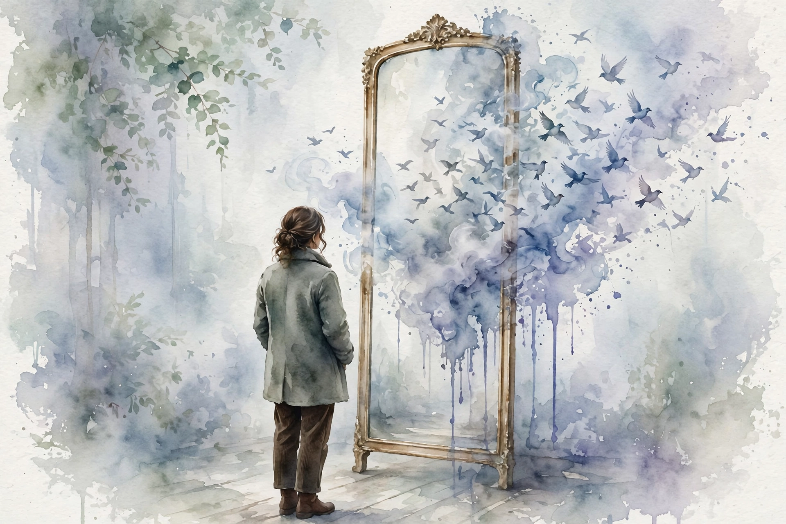

You Are Not So Smart · Episode 4 · Interactive Companion
The Self
Bruce Hood on the constructed self. The narrator inside your head is a press release, the feed is edited for hours a day, and the identity you defend is a reflection the world holds up.
← Track index · Episode chapter →

Illustration. Watercolor-style image generated for this page. A figure looks into a mirror that reflects many small figures back. Not a photograph.
The Wisdom Index: every nugget in this companion
Part 1
The Half-Second Delay
SOURCEHood's first move is definitional, because illusion misleads. He does not mean the self does not exist. He means: “an experience that is not what it seems.” The experience of having a self is real. What it seems to be is not.
SOURCELibet's finding, retold by Hood: brain activity that predicts your decision starts about half a second before you feel you decided. The feeling of having chosen arrives after the choice is already in motion. Hood's framing: “I decided” is a press release issued by an office that was not in the meeting.
INTERPRETATIONDo not trust the authorship feeling as evidence of authorship. Check decisions against outcomes, not against the glow of having chosen.
Nugget
The half-second delay
What happened. SOURCEThe brain starts the decision half a second before the feeling of deciding arrives.
Why it matters. INTERPRETATIONFree choice feels instant and authored. The feeling is real. The timing is edited.
The principle. INTERPRETATIONAudit decisions by results. The press release is not the meeting.
Part 2
The Blind Hours
SOURCEThe visual system proves the narrator edits heavily. You process only the central visual field in detail. You carry two blind spots the size of tennis balls. Every eye movement switches vision off, or the world would smear like a panning camera. Add it up: you are blind for about 2 to 3 hours of every waking day, and you never notice. The narrator fills the gaps and signs its name to the whole feed.
A waking day, according to your narrator
Hover any bar for detail. Sixteen waking hours, as told by the edited feed.
Source: vision research via Hood in the ep004 interview. Original toy chart built from episode claims. Bar heights are approximate, not measured values.
SOURCEHood's point is not that vision fails. It is that the whole production is like this. The self is the same kind of construction: registered firmly, corresponding loosely, like the square your neurons fire for though nothing is there.
INTERPRETATIONThe next time a memory feels complete, remember the tennis-ball blind spots. The seam is always there. You just never see it.
Nugget
The blind hours
What happened. SOURCETwo to three hours of each waking day are blind, deleted, unnoticed.
Why it matters. INTERPRETATIONThe smooth feed is manufactured. The narrator hides the cuts from the audience, and the audience is you.
The principle. INTERPRETATIONDistrust seamlessness. Wherever the feed feels perfect, the editing is heaviest.
Part 3
The Duplicator
SOURCEThe hamster experiment. The team gave a pet hamster physical states (a marble in its tummy, a broken tooth) and mental states (a whispered name, a shown picture). Into the machine it went. A sibling hamster appeared in the other box. Children were asked: does this hamster have the same physical attributes? Does it have the same mind? By age 5 or 6, children said: same body, different mind. The effect strengthened when the first hamster had a name, an identity.
SOURCEFive-year-olds accept duplicated toys as identical but insist a duplicated hamster has a different mind, more strongly when it is named. Physical duplication is fine. Mental duplication is rejected. Dualism is not a taught doctrine. It is the natural intuition, present before schooling, matching Descartes.
SOURCEHood is a materialist: the mind is the product of a complex biological computer, the brain. Change the brain and you change the self. Dementia's progressive erasure of the person is the terrible proof. No reliable evidence exists for souls or spirits. He borrows Marvin Minsky's phrase, the meat machine, and rejects the alternative as “pixie dust and spooks.” The wonder is not the stuff. It is the shared information.
Twins and the 50 percent
Hover any bar for detail. Same genes, half the personality shared.
Source: twin research via Hood in the ep004 interview. Original toy chart built from episode claims. Values are approximate.
INTERPRETATIONThe reader's check: notice where you feel dualist about yourself. The intuition is five years old. It is not evidence.
Nugget
The duplicator
What happened. SOURCEChildren copy bodies easily and refuse to copy minds. The soul intuition arrives before school does.
Why it matters. INTERPRETATIONYour deepest metaphysics may be a five-year-old's default. Check it against the evidence.
The principle. INTERPRETATIONChange the brain and you change the self. The machine is the person.
Part 4
The Reflection
SOURCEThe self as the reflection the world holds up: your identity is negotiated with your audience, not authored inside. Ostracism triggers desperate ingratiation because exclusion threatens the identity itself. The “not myself” pleas and the blamed wine are the narrator patching continuity when behavior breaks character.
SOURCEBronnie Ware, an Australian palliative nurse, interviewed the terminally ill about their regrets. The number one regret, by far: people felt they were not themselves, that they lived lives shaped by others' expectations. At the clarity of death's approach, the reflected self stands revealed: a life spent curating the reflection instead of authoring the character.
An experience that is not what it seems.
Hood's definition of the self, in the episode
SOURCEHood does not offer an exit from the construction. He offers a different relationship to it. Knowing the self is an experience that is not what it seems does not delete the experience. It demotes the narrator from author to instrument. You still use the self. You stop obeying it blindly.
INTERPRETATIONThree operating rules fall out of the episode. One: distrust authorship feelings and check decisions against outcomes. Two: expect the reflection. Your self-estimates track your audience, so change the audience and watch the self change. That is data about the instrument. Three: maintain the story deliberately. Since dissonance will patch continuity anyway, choose the patches. Author the reflection you want to meet.
Nugget
The reflection
What happened. SOURCEThe dying regret living by others' reflections. The self was curated, never authored.
Why it matters. INTERPRETATIONYou cannot stop the narrator. You can choose its material.
The principle. INTERPRETATIONUse the self. Stop obeying it blindly. Author the reflection you want to meet.